Return to Assignment 2 Overview
This was the original camera man image:
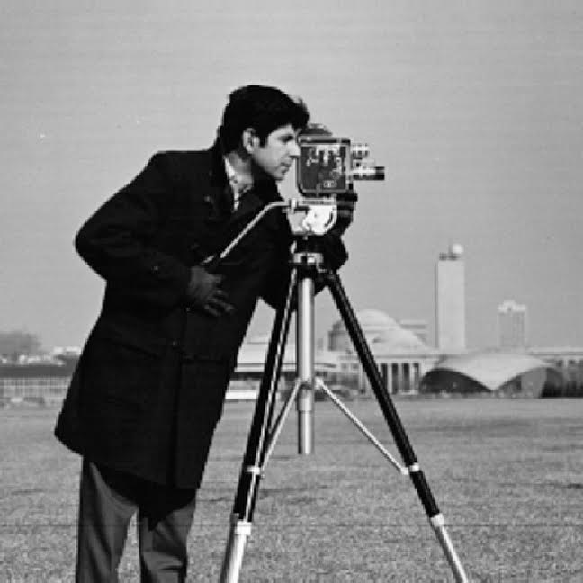
To build the Gaussian filter, I made a 1D Gaussian with cv2.getGaussianKernel(ksize=9, sigma=1.0) and took the outer product with its transpose, gaussian_2d = gaussian_1d @ gaussian_1d.T, to get a 9×9 2D Gaussian. I blurred the cameraman with signal.convolve(grayscale_image, gaussian_2d, mode='same') and then repeated everything from Part 1.2 on the blurred image: Dx, Dy, gradient magnitude, and a binarized image.
This was the camera man image after blurring with 2D Gaussian:
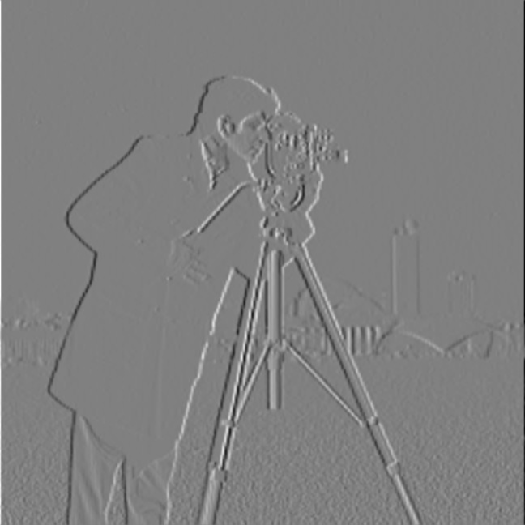
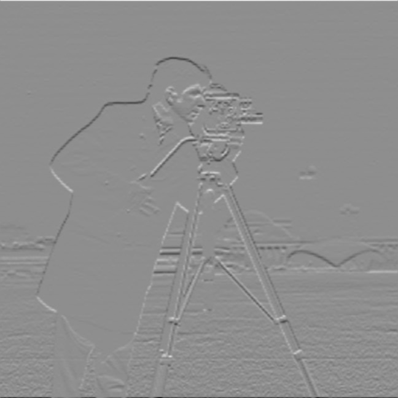
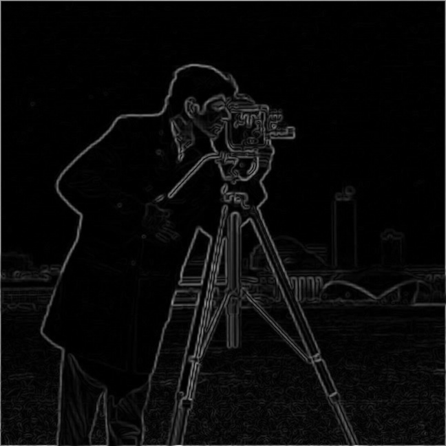
To binarize the gradient magnitude, I tried the same thresholds as Part 1.2: 5, 20, 35, 50, 65 and 80 to see which was best.
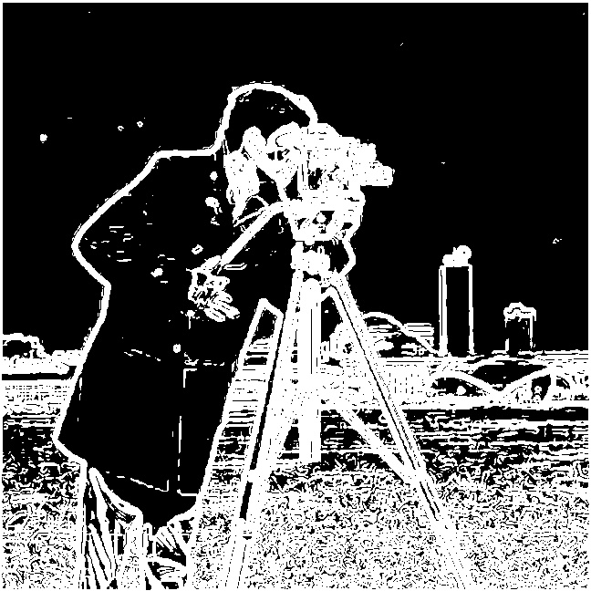
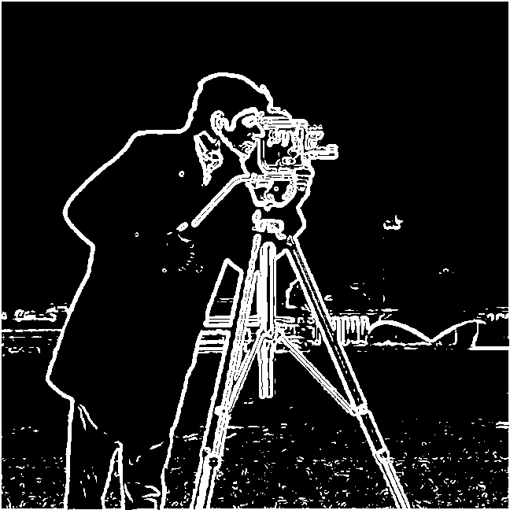
I found that the lower thresholds of 5 and 20 had a lot of noise (specks in the images). I think that the threshold of 35 was the best because there is minimal noise in the grass while the strong edges in the images are still present, and background objects are visible as well.
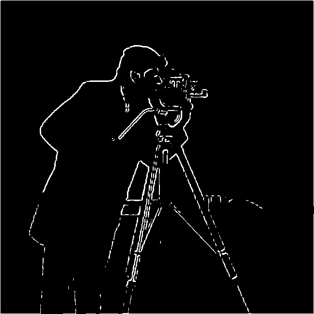
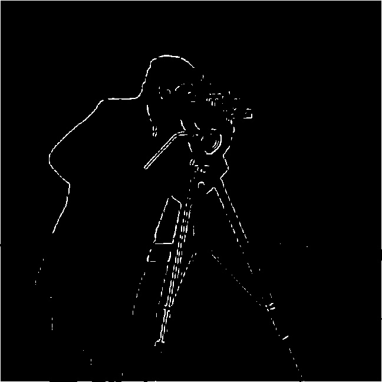
Just like in Part 1.2, the higher the threshold I set, I found that the images were starting to lose their edges.
My DoG results (single convolution version) were identical to my blur then take derivative results (2 convolutions version). I confirmed this in my code using np.allclose(dx_output_image[1:-1, 1:-1], gaussian_dx_image[1:-1, 1:-1]) and np.allclose(dy_output_image[1:-1, 1:-1], gaussian_dy_image[1:-1, 1:-1]) which both returned True (leaving out outermost pixel to ignore differences from blurring/padding).
Using the finite difference operator method gave noisy results so the intention of using Gaussian/DoG was to minimize that noise. This worked as expected and in my new results there is significantly less noise from blurring the original image first before taking the derivatives. With the finite difference operator, I saw that there were many specks especially in the low threshold images (5, 20, 35). Now with smoothing first, the specks are gone at a much lower threshold of 35 compared to the finite difference operator's threshold of 50 (where some specks still remained). This also meant that I could sacrifice less in terms of how much of the weaker edges I lose. With the finite difference operator, the strong edges like the cameraman's outline started to be less defined as the threshold got higher than 50, but now with smoothing first, and keeping a lower threshold of 35, more edges are kept, which is apparent in how much more we see in the background. Overall, every output image both before and after binarizing turned out to be less noisy, less textured, and had more thick edges, with smoothing than the finite difference operator counterpart.
Here are the images for threshold 35 and 50 for finite difference vs. gaussian smoothing / DoG side-by-side for comparison:
| Threshold = 35 | Threshold = 50 | |
|---|---|---|
| Finite difference | 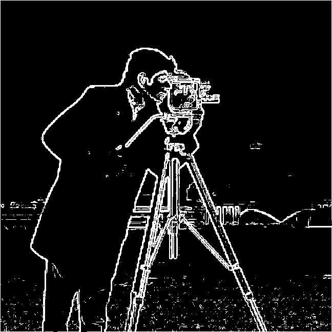 |
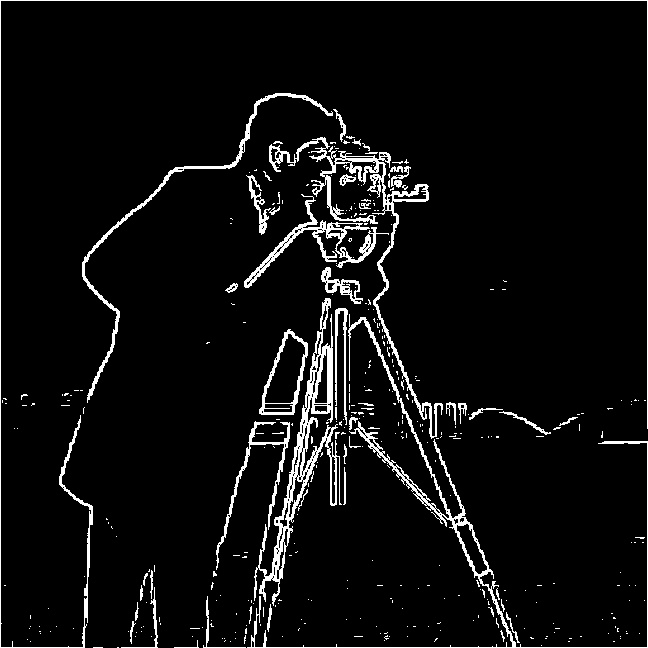 |
| Gaussian/DoG | 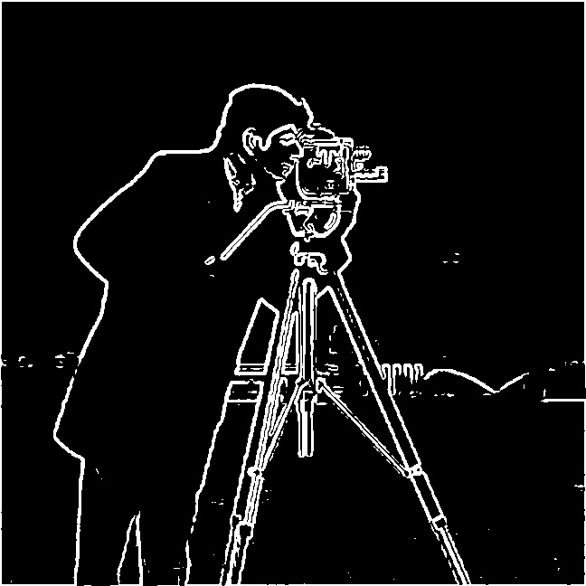 |
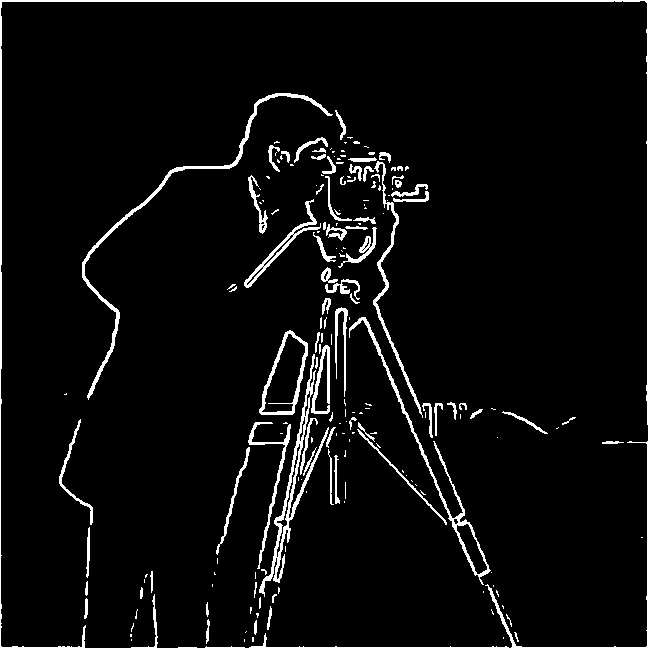 |
To build the DoG filters, I convolved the 2D Gaussian with the finite difference operators using signal.convolve(gaussian_2d, dx) and signal.convolve(gaussian_2d, dy). This combines the blur and the derivative into one filter, so I only have to use one convolution.
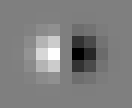
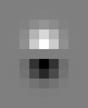
I applied each DoG filter to the original image in a single convolution and computed the gradient magnitude and binarized image the same way as before, using the same threshold of 35.
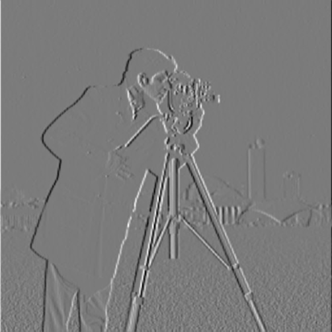
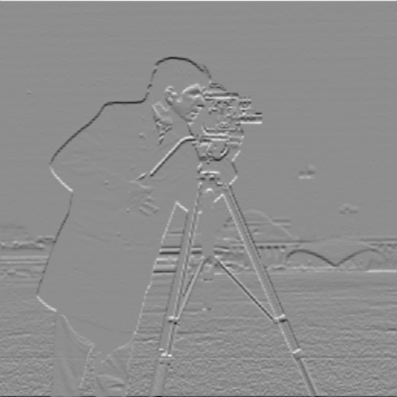
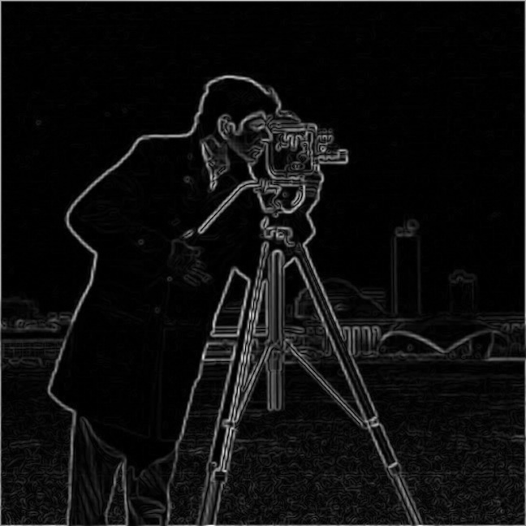
For bells and whistles, I needed to compute the image gradient orientations and map them with HSV. The gradient at each pixel points in the direction the brightness increases fastest. I had to show this direction as a colour without using an angle function so I gave every direction its own number, so that the number goes up steadily as the direction turns around in a circle. Since I avoided angle functions, my orientation values aren’t a real angle and each quarter of the circle is squeezed onto the same range, so the colours aren’t spread perfectly evenly, and diagonal directions get slightly more or less hue space than straight ones.
Following the same steps done in Part 1.2:
vertical = y/total, where total = abs(x) + abs(y). This is −1 when the gradient points straight up, 1 when it points straight down, and 0 when it is completely horizontal. Pixels with total == 0 have no direction, so I skipped them.x >= 0), I kept vertical, giving values from −1 to 1. If it points left, I used 2 - vertical, which continues the scale from 1 to 3. Going all the way around, up is −1, right is 0, down is 1, left is 2, and back to up is 3.hue = (orientation + 1) / 4 and saved them with the cyclic hsv colormap using plt.imsave("hsv_cameraman.jpg", hue, cmap="hsv"). Because the colormap wraps around, −1 and 3, which both mean “up,” get the same colour.Up: red
Down: cyan
Right: yellow to green
Left: blue to purple